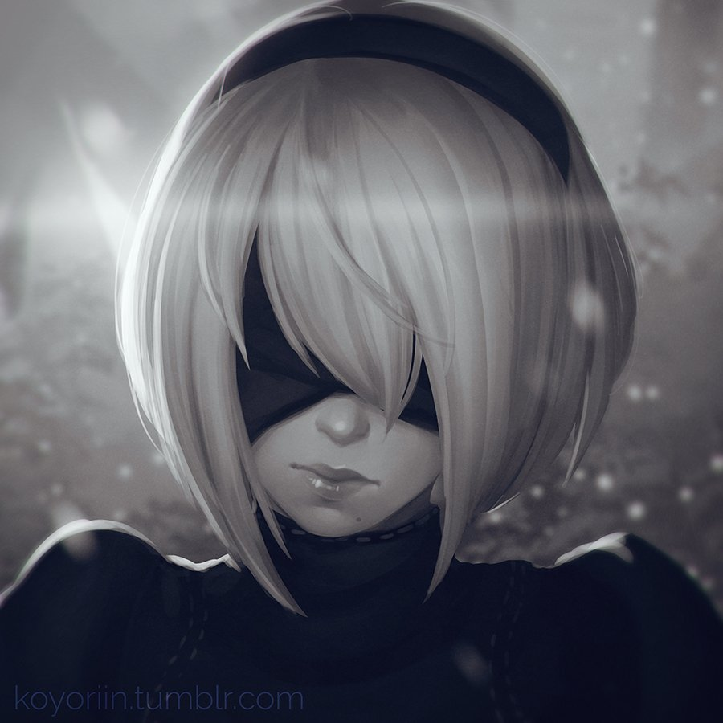
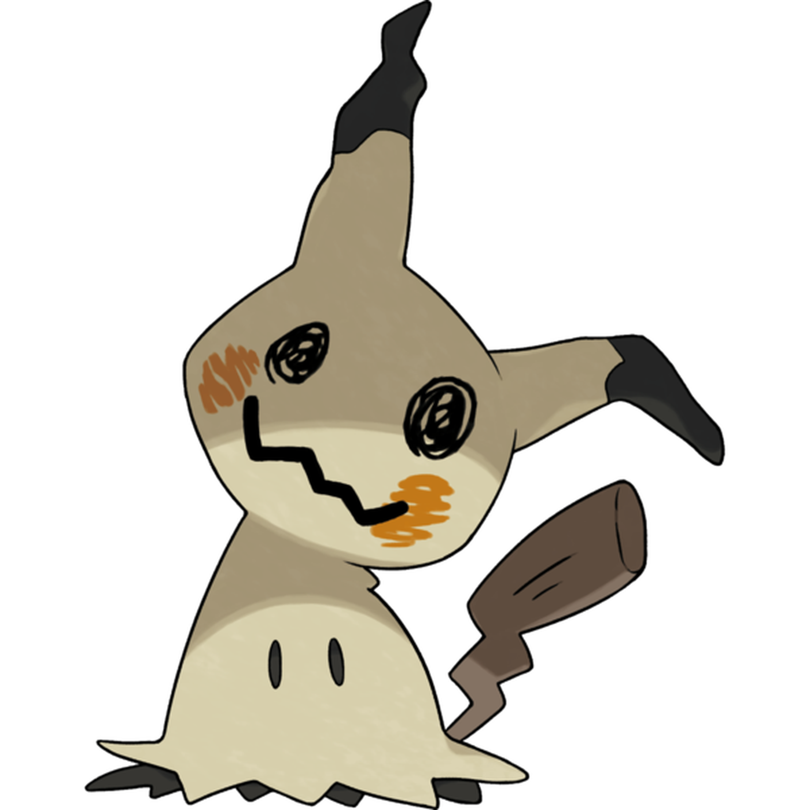

here's a list of 'characters' i loooooooooooove or just want to talk abouut~ hehe
Characters

YoRHa No. 2 Type: B
- 2b is my waifu. NieR: Automata is my favorite game and this character has literally everything i could ever want. Though my interpretation of her is broadened to the hundreds of comics i've read, her canonical character sets the same basic framework. 2B is a blade of quiet determination. As a combat android, she does not encourage idle chatter on frivolous subjects and is generally reticent towards others. She also has high respect for the chain of command and rarely questions her orders, unlike her partner. However, 2B occasionally expresses a notably sardonic wit in the face of certain situations and can even be hot-headed at times. 2B is actually a very kind person deep down. She cares a great deal for her friends, petting her Pod as though it were a pet and going so far as to find a picture of a flower for Operator 60. She is also very respectful towards others' wishes; when she and 9S are searching for the memories of an android with amnesia via going to places 9S wonders what's so important about them. 2B merely states that the memories are important to her and that's all that matters. in addition, despite her professional nature, 2B dislikes 9S calling her "ma'm" describing it as "unnecessary." Her cold and aloof exterior is largely out of necessity, as her defence mechanism for the horrors of life and the reality of her programming. 2B is prone to letting her emotionless guise slip in certain situations. As she and 9S become closer, she becomes more sociable and willing to engage in conversation. For example, she humors 9S when he talks about taking her shopping after the war with the Machines has ended and even uses his preferred nickname of 'Nines', though she quickly takes it back. 2B also exhibits thinly-veiled jealousy when 9S agrees to help the Resistance member in the Amnesia side quest, accusing him of falling for her. in the final battle against Adam, she expresses pure rage and raw hatred for the Machine Leader when she witnesses 9S's critical condition, swearing she would kill him. in numerous moments throughout her adventure, 2B expresses frustration and pain with her true role in relation to 9S, hating the cycle they are locked in. She becomes emotional at having a chance to finally save the 9S she knows from Engels' attack at the beginning of the game but later shows anger at learning that his memory after their initial rendezvous was lost. She also openly expressed sorrow when she was forced to kill 9S after he was infected with a logic virus in Ending A, crying violently after she took his life and expressing immense joy when it was revealed that he transferred his consciousness into a Machine body to preserve his life. So yeah i'd say i like her a little.

Ken Kaneki
- Manga bro, ima add an art dump for him <

Nagisa Shiota
- ill fill out these later okay<

Mimikyu
- ill fill out these later okay<

Baby Slime
- ill fill out these later okay<
[ Back to Top ]